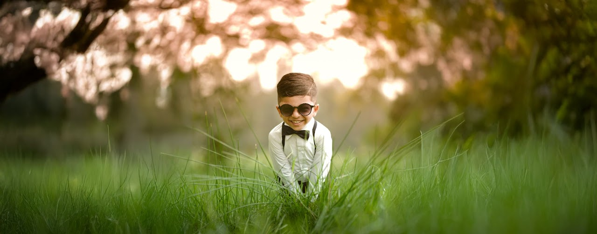
VISUAL STORIES • INDIA
Frames that
feel alive.
Portraits, wildlife, people and quiet moments — photographed with a love for natural light and honest emotion.
Explore the work ↘Photography is
about noticing.
I photograph the details people usually walk past — a look, a bird between leaves, a road after rain, a person caught in their own moment.
My work moves between portraits, wildlife, nature, street scenes and personal stories. The goal is simple: make photographs that still feel real long after you first see them.
More about Sreekesh →A collection of
observed moments.
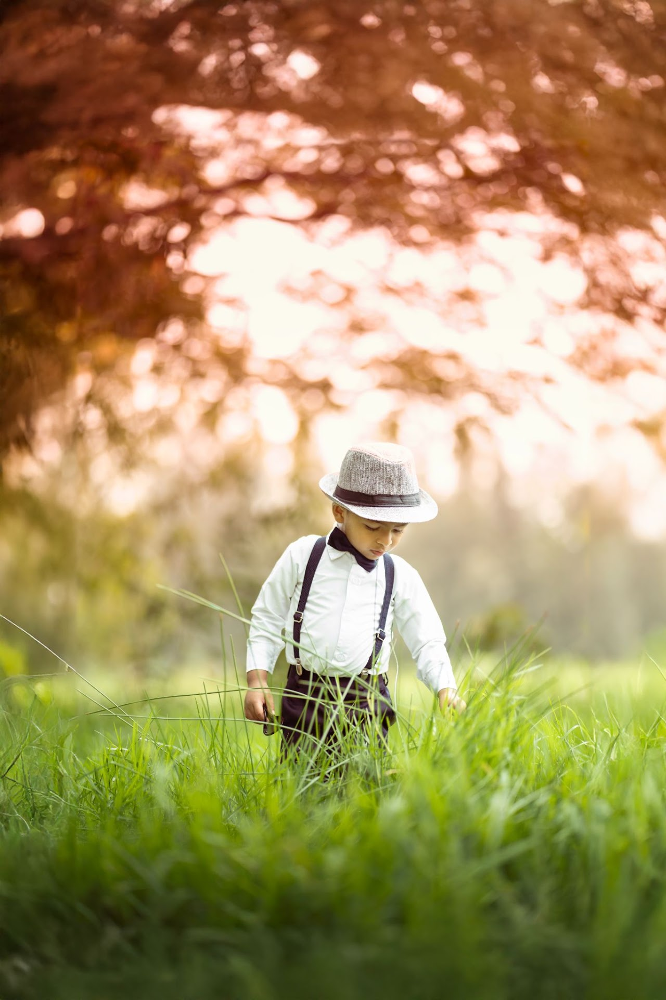
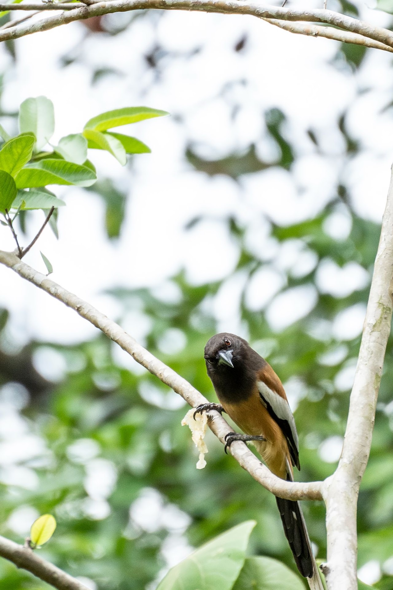
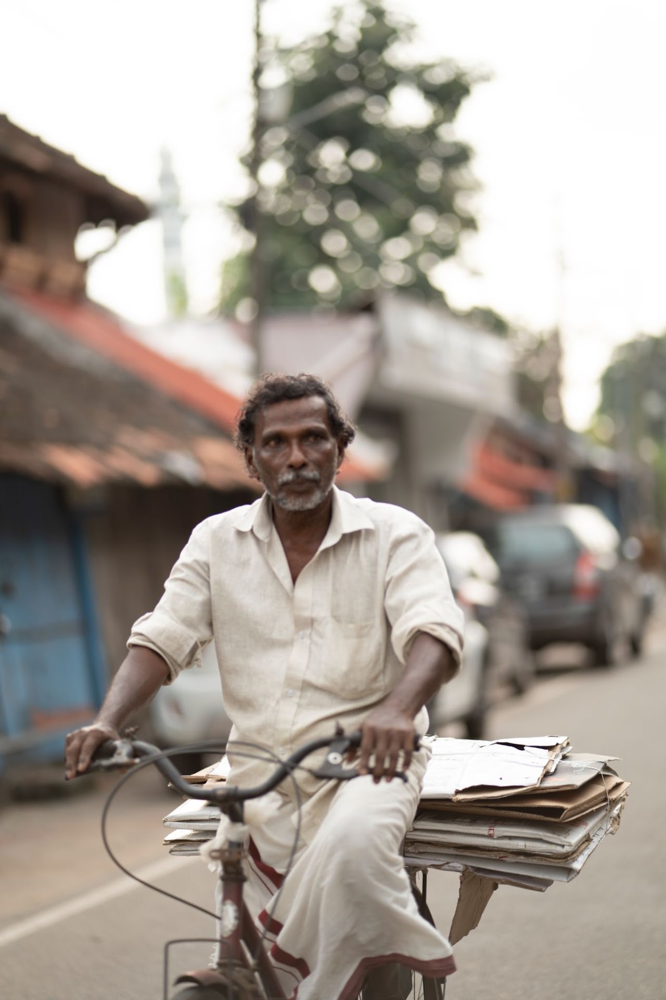
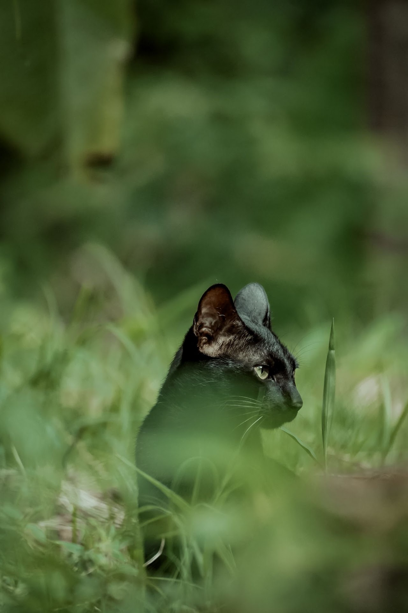
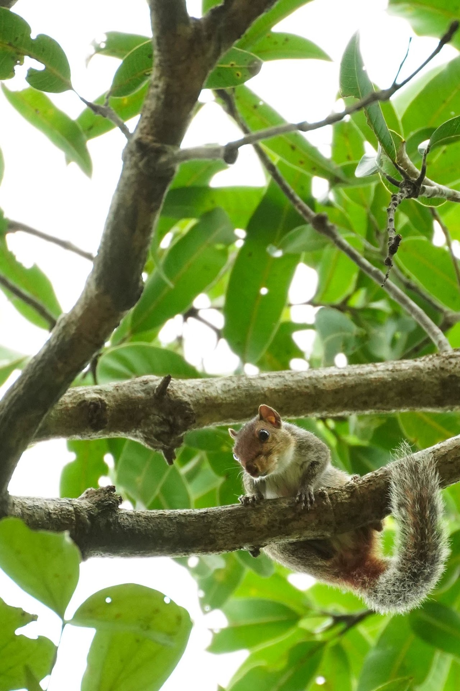
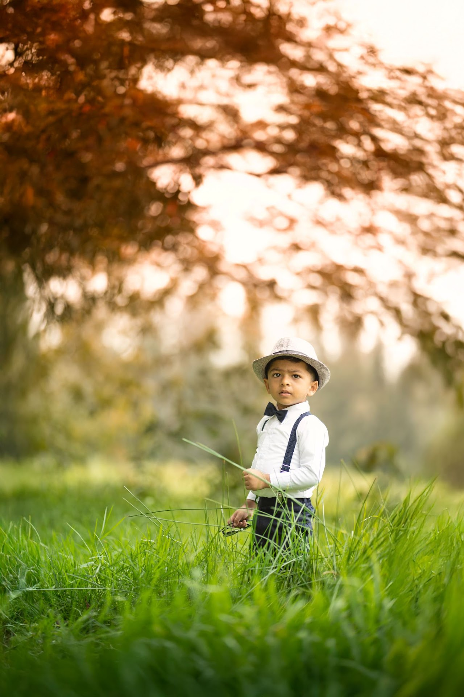
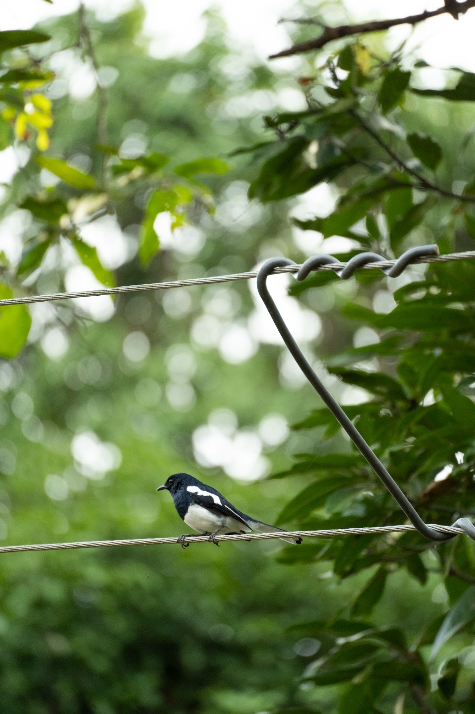
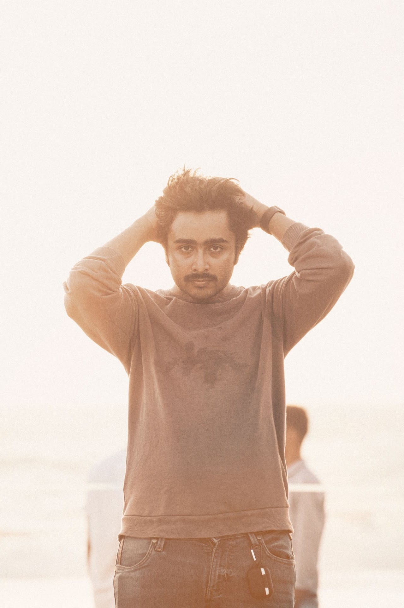
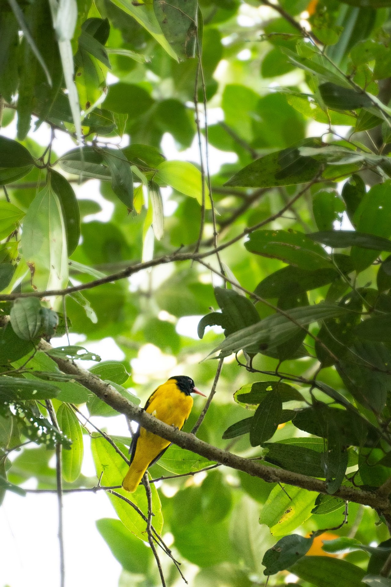
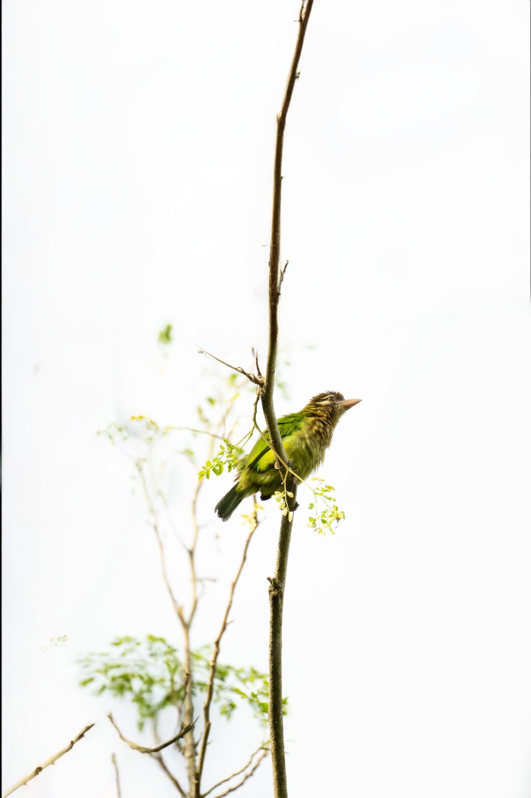
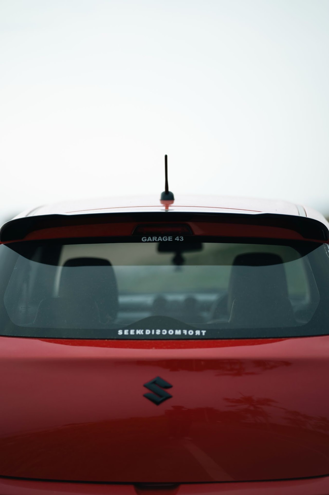
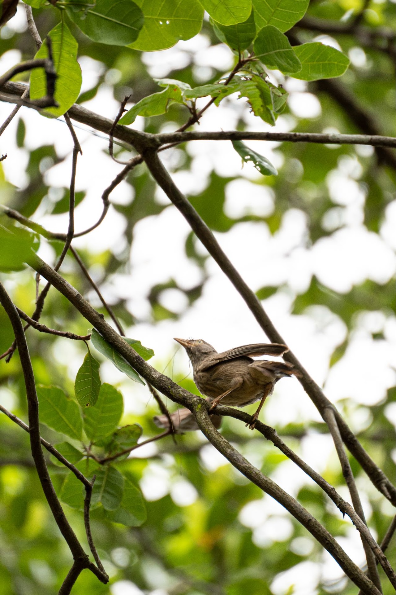
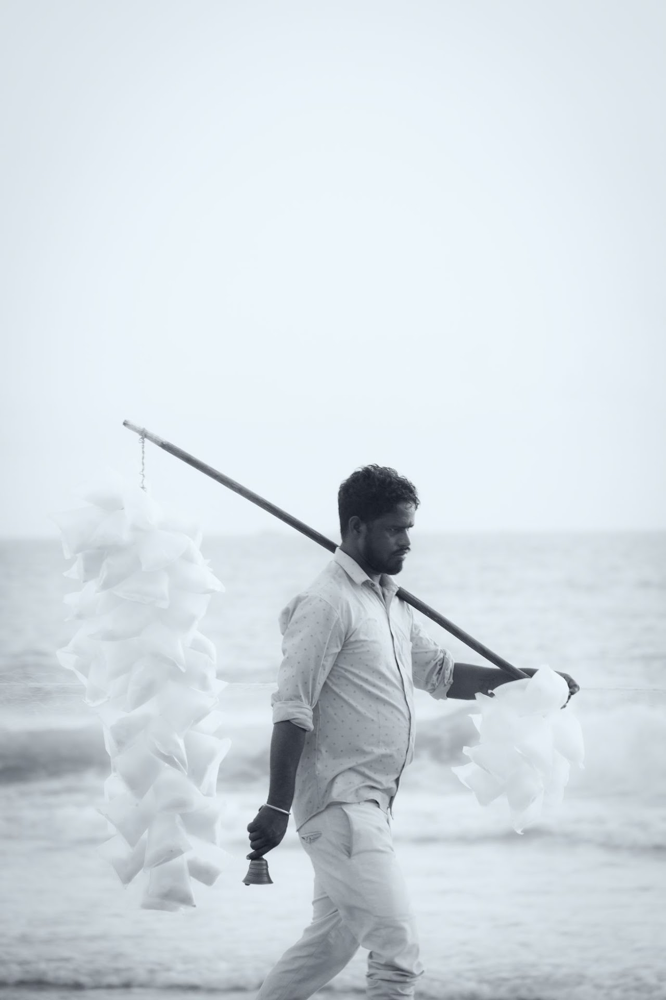
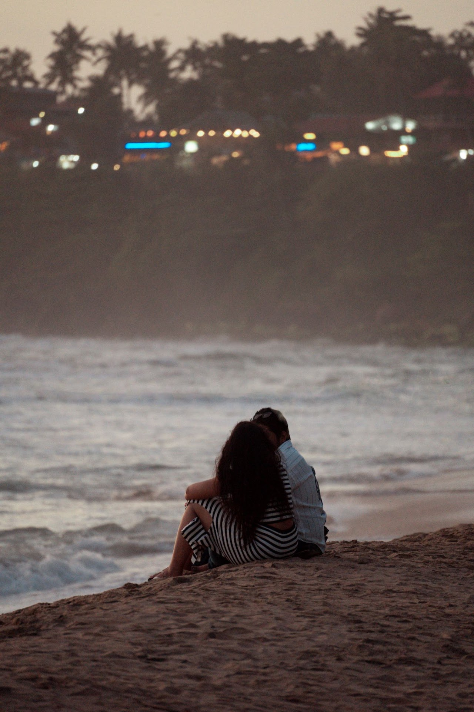
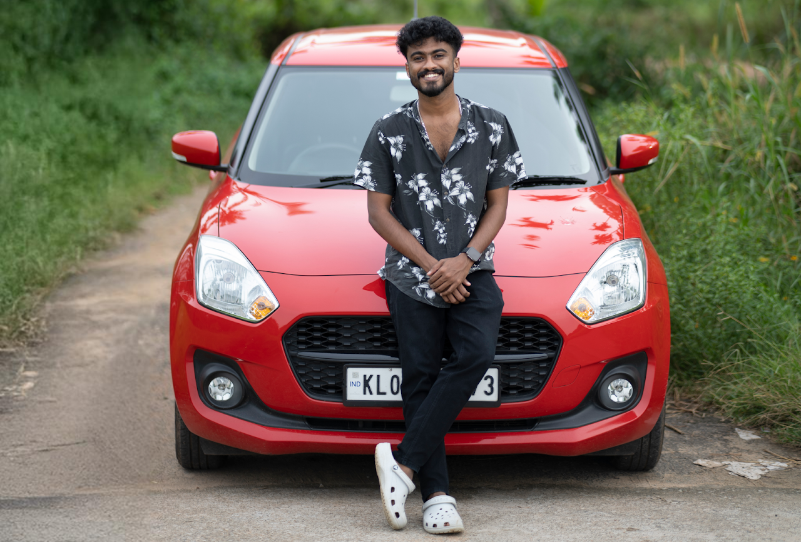
THE PHOTOGRAPHERHELLO, I'M SREEKESH
I chase light,
not perfection.
Photography became a way of slowing down and paying attention.
Whether I'm working with a person or waiting quietly for a bird to appear between branches, I look for the frame that feels natural rather than forced. I like photographs with atmosphere, texture and a little bit of mystery.
Based in India and available for portraits, personal shoots, creative projects and visual storytelling.
Let's create something ↗What I
photograph.
Custom shoots are shaped around the person, place and story. Tell me what you have in mind and we can build the right approach.
Portraits
Natural, editorial and personal portraits with an emphasis on authentic expressions.
Wildlife & Nature
Quiet observation, details, birds and the atmosphere of the outdoors.
Creative Projects
Conceptual shoots, visual campaigns, artist portraits and experimental stories.
Events & Personal Work
Unposed moments and visual documentation with a cinematic, understated feel.
Have a story
to photograph?
Send a quick enquiry. Tell me what you're planning, where it is and what you want the photographs to feel like.